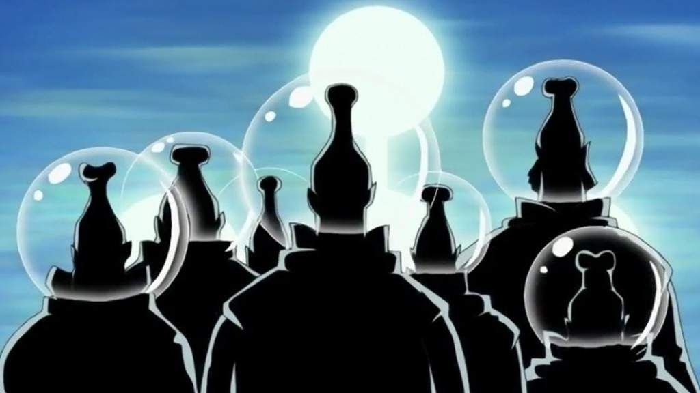

El Gobierno Mundial tiene una estructura jerárquica muy compleja y hay que distinguir dos partes. La primera es la organización central llamada "Gobierno Mundial", que fue fundada hace ochocientos años por los veinte reyes, y en segundo lugar los más de 170 estados aliados miembros que se unieron bajo el Gobierno del Mundo, pero en sus propias formas de gobierno, en gran medida independiente. Cada uno tiene sus propios líderes, su caja de nobleza, y sus ejércitos que, sin embargo, aprobaron las leyes del gobierno que los líderes del mundo impusieron.
Los líderes de los Estados del Consejo llamados los "Reyes" vienen cada cuatro años en Mary Geoise para una conferencia mundial en conjunto, conocida como Levely. El impacto exacto se desconoce, pero se supone que tiene más influencia que la de todos los aristócratas del mundo.
En consecuencia, el gobierno del mundo, tanto feudales, demócratas y dictatoriales, entran en un régimen totalitario como la "paz mundial" bajo la que su gobierno aspira. Ellos actúan estrictamente de acuerdo con el lema de "Justicia Absoluta" y la moral y la ética en la parte trasera. El Gobierno Mundial también determina quién es criminal y ofrece una recompensa en forma de folletos.
Miles de piratas son sacrificados inmediatamente si sirve para el bien de las generaciones futuras. Son también poco tolerados opositores políticos, rebeldes y revolucionarios. Estas personas están o ejecutados, encarcelados o forzados a trabajar en Tequila Wolf. Si bien hay una isla judicial, esta no tiene influencia en el gobierno de los líderes del mundo y sólo se utiliza para hacer cumplir las leyes prescritas. Esto es especialmente evidente en los aristócratas del mundo, la alta nobleza del gobierno mundial que sin restricciones de libertad de acción, no tratan con respecto a sus subordinados y son adorados como casi dioses.
Los Cinco Ancianos son cinco hombres de edad avanzada de los que aún no se sabe mucho. Sin embargo, tienen plena autoridad sobre todos los órganos de gobierno y dictan las leyes pero solo de manera pública, desconocido para el público en general la persona que lidera el gobierno es una entidad de apariencia y género desconocidos hasta ahora, llamada Im.